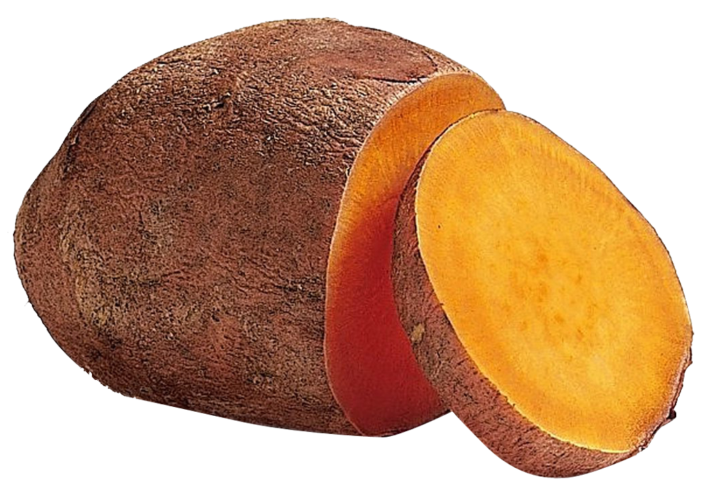

All Abount Sweet Potatoes
The Best Vegetable There Is
The sweet potato or sweetpotato (Ipomoea batatas) is a dicotyledonous plant that belongs to the bindweed or morning glory family, Convolvulaceae. Its large, starchy, sweet-tasting, tuberous roots are a root vegetable.[1][2] The young shoots and leaves are sometimes eaten as greens. The sweet potato is distantly related to the common potato (Solanum tuberosum), both being in the order Solanales. The sweet potato, especially the orange variety, is often called a "yam" in parts of North America, but it is entirely unrelated to true yams. Ipomoea batatas is native to the tropical regions in the Americas.[3][4] Of the approximately 50 genera and more than 1,000 species of Convolvulaceae, I. batatas is the only crop plant of major importance—some others are used locally (e.g., I. aquatica "kangkong"), but many are poisonous. The genus Ipomoea that contains the sweet potato also includes several garden flowers called morning glories, though that term is not usually extended to Ipomoea batatas. Some cultivars of Ipomoea batatas are grown as ornamental plants under the name tuberous morning glory, used in a horticultural context.
Top Producers of Sweet Potatoes
- China
- Uganda
- Nigeria
Fun Facts
- Sweet Potatoes are only distantly related to potatoes
- Sweet Potatoes come in many colors including white, red, purple
- It is a misconception that orange Sweet Potatoes are the same as Yams